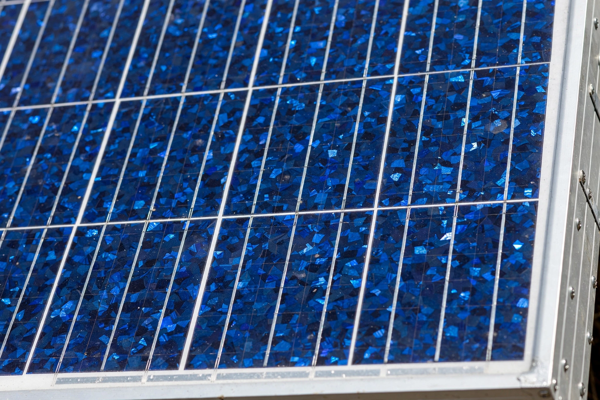

Solar panel

A solar panel (photovoltaic module) is an assembly of solar cells that convert sunlight directly into electricity by the photovoltaic effect. Panels power everything from garden lights and satellites to gigawatt-scale solar farms, and have become, in much of the world, the cheapest source of new electricity in history. See Solar power and Solar energy.
A typical panel for homes measures about 1.7 by 1.1 metres, contains 60–72 silicon cells (or their modern half-cut equivalents), and produces roughly 350–450 watts in strong sun.
How panels work
Most cells are crystalline silicon: a wafer of semiconductor doped to form a p–n junction. Photons with enough energy knock electrons free; the junction's field sweeps them into a current. Commercial module efficiencies run around 20–25 per cent, laboratory cells exceed 26 per cent for silicon and approach the mid-40s for multi-junction space cells; thin-film alternatives (cadmium telluride, CIGS) and perovskites compete on cost, weight and new form factors.
Panels generate direct current, converted to grid-standard alternating current by inverters; systems may be grid-tied, hybrid with batteries, or off-grid entirely. Performance falls slightly with heat and degrades slowly, roughly half a per cent per year, with warranties commonly 25 years.
Costs and deployment
The first practical silicon cell (Bell Labs, 1954) was about 6 per cent efficient and fantastically expensive, fit only for satellites and remote lighthouses. Manufacturing scale — above all in China since the 2000s — and steady learning-by-doing (Swanson's law: prices fall about 20 per cent for every doubling of cumulative production) cut module prices by over 99 per cent from the 1970s. Global installed solar capacity passed a terawatt in the early 2020s and keeps doubling every few years.
See also: Solar power · Solar energy · Renewable energy · Energy storage · Electricity